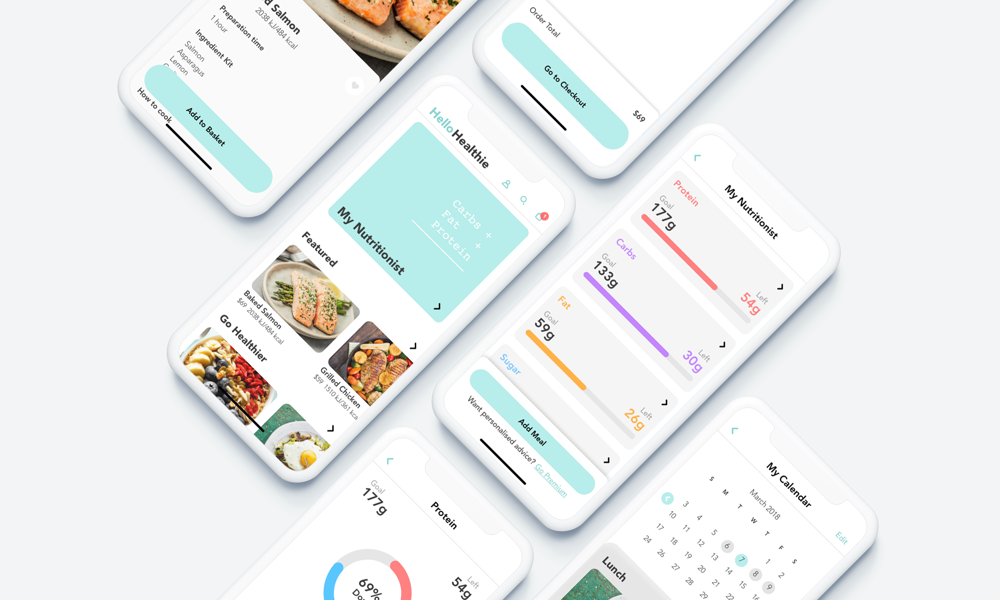
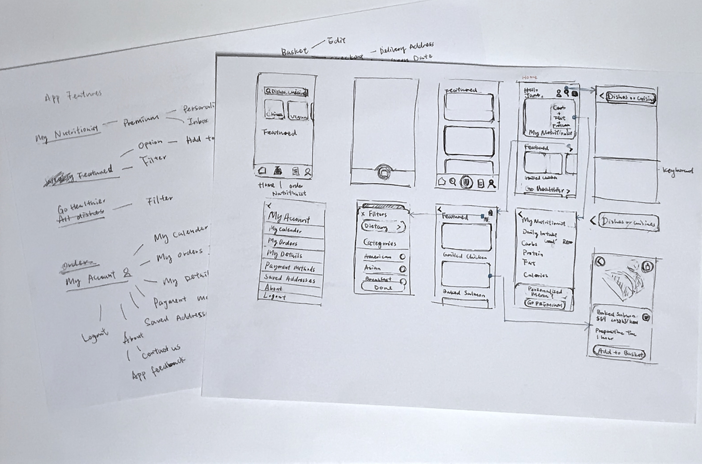

Hello Healthie
UX/UI Design Challenge
UX Design
UI Design
Jan - Feb 2018
Leann Chen
Rosalyn Chun
Information Architecture
Prototype

This was a 7-week online course provided by +Acumen and IDEO.org. Throughout this course, I was introduced to different methods and tools of human-centred design and tackled a real-world design challenge with my teammates, and I took part in design research, concept generation and rapid prototyping.
01
Mini Design Challenge
At the beginning of the course, we were asked to complete a couple of mini design challenges. One of the mini design challenges was to brainstorm “How might we design a service to improve health in everyday places?”.
The everyday places include home, workplace, school and our community. We spent 5 minutes for each place to come up with as many ideas as we could.

After that, we were asked to vote and select the best two ideas, Housework calories metre and Food pyramid shelf, for making prototypes. This learning through making process taught me how to use simple tools to do quick prototyping and validate our ideas.
Housework calories metre
Food pyramid shelf
02
Defining Opportunity
In our final design challenge, we chose the topic of “How might we provide healthier food options for busy working people?”.
Brainstorming
We first brainstormed the problems that different stakeholders, including the user, the business and the government, might encounter and found that the business sector would be our target to improve the current situation since the majority of problems we came up with was related to it. The problems were then categorised into insecure food source, limited food options, money-oriented, and non-systematical.
Interview
We interviewed 5 people in total to gain insights from their eating habits. We drew some interesting findings from each of the respondents, transcribed each of the points on a piece of memo and placed it under each respondent's name.
Major takeaways from the interview
The memos were then categorised. We picked the three most important points as the main objectives to develop our concept:
1. Prefer healthy ingredients, methods and seasoning
2. Prefer fast and simple
3. Take healthy advice from professionals

03
Ideation
Our Concept
We then converted the insights into a concept, Hello Healthie, which is an app collaborating with nutritionists, chefs, local farms to provide menu customizing and ingredient delivery service in Hong Kong. It promotes healthy cooking and a balanced diet for Hong Kong people who are too busy to prepare meals.
Information Architecture
We considered the functions to be included in the app and drafted the information architecture.
Low Fidelity Prototype
After finishing the information architecture, we created low fidelity prototypes to visualise the user interface of the app.

High Fidelity Prototype
A high-fidelity interactive prototype was then created using Adobe XD to demonstrate the information visualisation and possible user interactions for accessing particular functions and features whilst using the app.
Ordering the ingredient kits and recipes designed by the team of nutritionists and chefs
The recipes are all well designed by a consultant team consisted of nutritionists and chefs to provide balanced diets and affordable delicacies. With just a few clicks, the fresh ingredient kits will arrive at your door.
Keeping track of the nutrient intake
Users can keep track of their nutrient intake by 'My Nutritionist' feature. After the ingredient kit is delivered, users can add their meals that they ordered into My Nutritionist and the nutrient data will be shown on the dashboard for users to monitor their diets.
Searching for menus
Hello Healthie provides a wide range of menus. Users can filter their search result based on their specific dietary and the category of food.